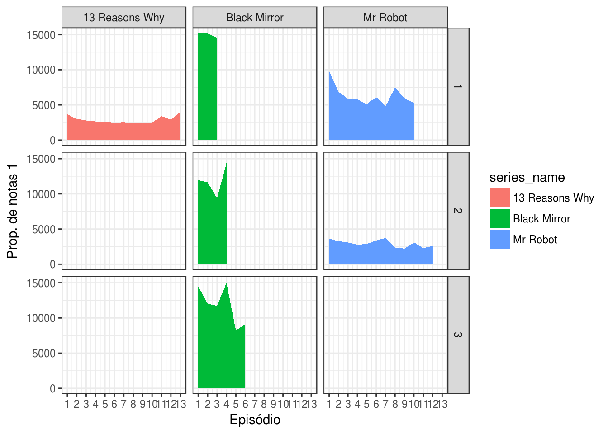
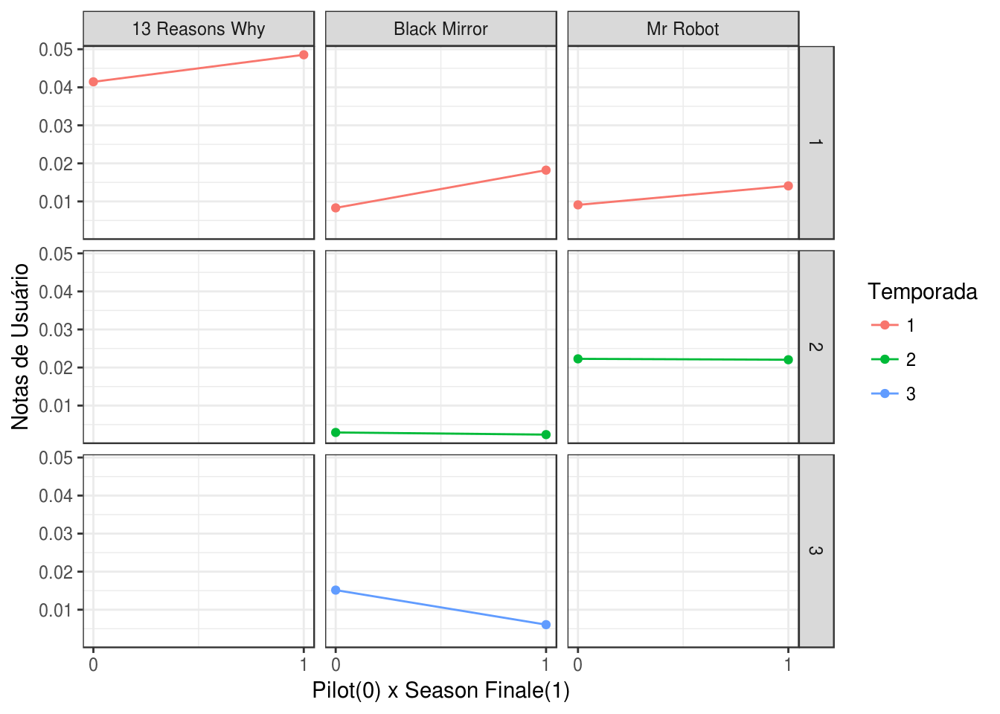
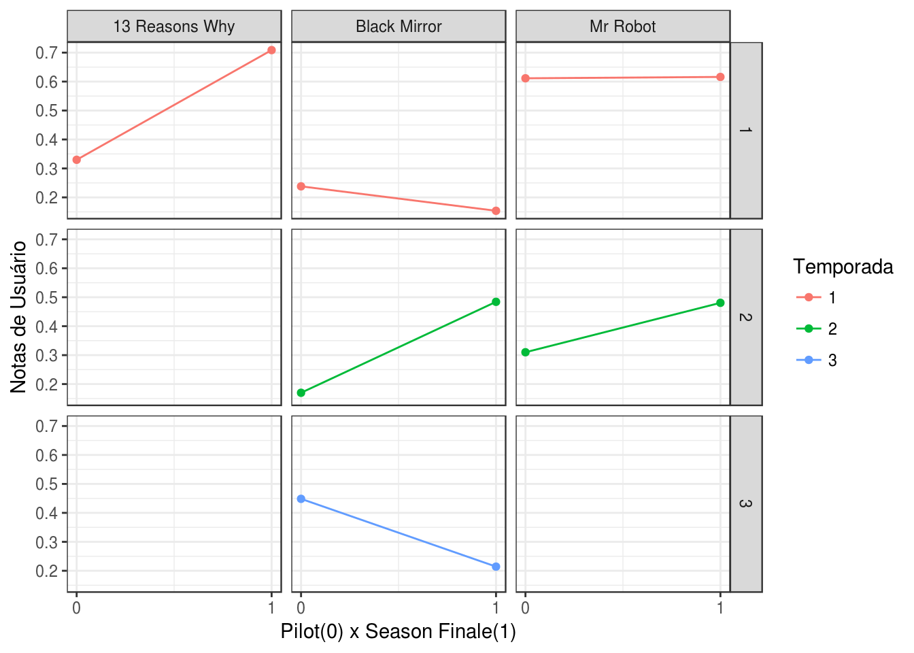
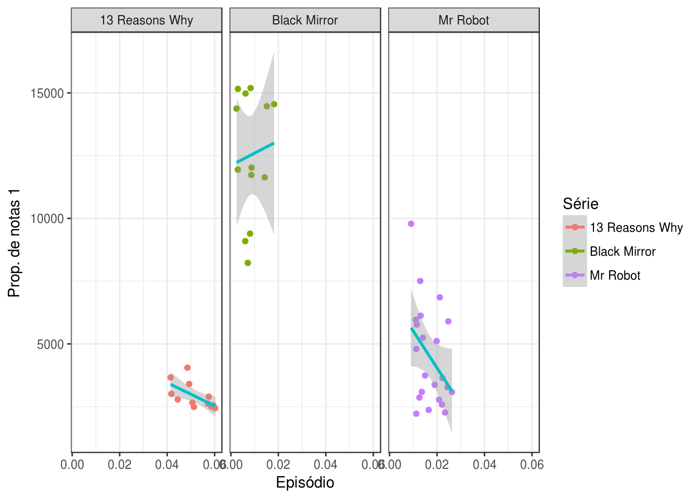
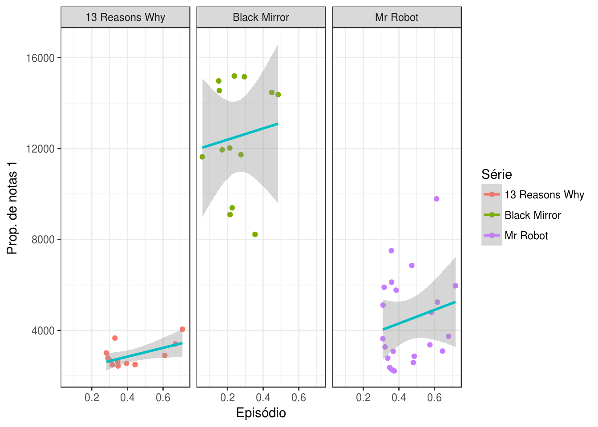
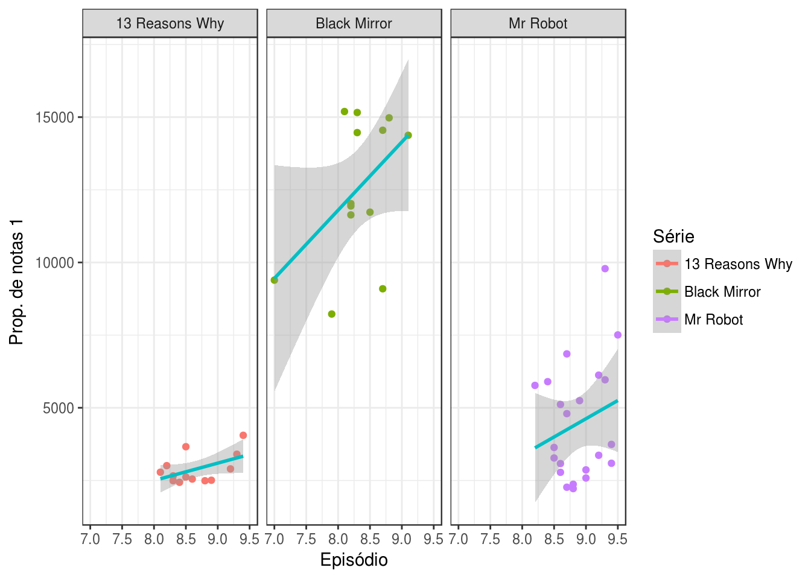

Sobre os dados
Esta análise foi realizada utilizando dados sobre avaliações de episódios de séries presentes no IMDB até julho de 2017, nesse relátorio se encontram análises para as séries Black Mirror, Mr Robot e 13 Reasons Why. Mais informações sobre esses dados podem ser encontradas neste repositório.
dados = read_csv(here("content/dados/series_from_imdb.csv"),
progress = FALSE,
col_types = cols(.default = col_double(),
series_name = col_character(),
episode = col_character(),
url = col_character(),
season = col_character())) %>% filter(series_name %in% c("Black Mirror", "Mr Robot", "13 Reasons Why"))Quanto maior o número de episódios, mais popular a série?
n_episodes.popularity <- dados %>%
ggplot(aes(x = season_ep, y = user_votes, fill = series_name)) +
geom_area() +
facet_grid(season ~ series_name) +
scale_x_continuous(breaks = 1:13) +
labs('Episódio mais odiado', x = 'Episódio', y = 'Prop. de notas 1', color = 'Série')
n_episodes.popularity
series <- dados %>% group_by(series_name) %>%
summarise(n = n(), popularity = sum(user_votes) / n)
series## # A tibble: 3 x 3
## series_name n popularity
## <chr> <int> <dbl>
## 1 13 Reasons Why 13 2889.
## 2 Black Mirror 13 12520.
## 3 Mr Robot 22 4469.Aqui utilizei um grafíco de linhas, onde x é um episódio (váriavel season_ep nos dados) e y é a quantidade de votos (váriavel user_votes nos dados) desse episódio. Antes de realizar a análise, eu imaginei que quanto maior o número de episódios mais popular a série, porém aqui vi que isso não é o que ocorre. Como pode-se ver, a série Black Mirror possui 3 episódios na 1ª temporada, 4 na 2ª temporada e 6 na 3ª temporada (totalizando 13 episódios), e é a série mais popular, em todas as temporadas. Na tabela abaixo do gráfico podemos ver que a popularidade média de cada episódio de Black Mirror é 12519, quase 3x maior que a média dos episódios de Mr Robot que fica com 4469.
Inícios e finais de temporadas são mais amados ou mais odiados?
inicio.geral <- dados %>%
group_by(series_name) %>%
filter(season_ep == 1)
inicio.geral$tipo <- rep(0,nrow(inicio.geral))
fim.13reasons <- dados %>%
filter(season_ep == 13, season == 1, series_name == '13 Reasons Why')
fim.mrrobot.1 <- dados %>%
filter(season_ep == 10, season == 1, series_name == 'Mr Robot')
fim.mrrobot.2 <- dados %>%
filter(season_ep == 12, season == 2, series_name == 'Mr Robot')
fim.blackmirror.1 <- dados %>%
filter(season_ep == 3, season == 1, series_name == 'Black Mirror')
fim.blackmirror.2 <- dados %>%
filter(season_ep == 4, season == 2, series_name == 'Black Mirror')
fim.blackmirror.3 <- dados %>%
filter(season_ep == 6, season == 3, series_name == 'Black Mirror')
fim.geral <- rbind(fim.blackmirror.1, fim.blackmirror.2, fim.blackmirror.3, fim.mrrobot.1, fim.mrrobot.2, fim.13reasons)
fim.geral$tipo <- rep(1,nrow(fim.geral))
dados.inicio.fim <- rbind.data.frame(inicio.geral, fim.geral)Essa pergunta será respondida da seguinte forma: serão plotados gráficos de linha, onde o primeiro ponto é o 1º episódio da temporada (pilot) e o segundo ponto é o último episódio da temporada (finale). Para julgar um episódio como odiado ou amado utilizei as váriaves r1 (proporção de usuários que votaram 1 estrela) e r10 (proporção de usuários que votaram 10 estrelas), respectivamente.
Odiei grr
dados.ggplot.odiado <- dados.inicio.fim %>%
ggplot(aes(x = tipo, y = r1, color = season)) +
geom_line() +
geom_point() +
facet_grid(season ~ series_name) +
scale_x_continuous(breaks = 0:1) +
labs('Pilot x Season Finale', x = 'Pilot(0) x Season Finale(1)', y = 'Notas de Usuário', color = 'Temporada')
dados.ggplot.odiado
Analisando a primeira linha (com a primeira temporada de cada série) podemos ver que nas três séries o season finale foi mais odiado que o pilot. Na segunda temporada temos duas séries, 13 Reasons Why possui apenas uma temporada até o momento, aqui temos o que o pilot foi mais odiado que o season finale, no baso de black mirror também podemos notar que a proporção de r1 foi muito baixa (menos de 1% dos usuários deram nota 1 para tanto o pilot como o season finale). Na terceira temporada temos apenas a série Black Mirror, e aqui temos novamente que o pilot foi mais odiado que o season finale.
Amei s2
dados.ggplot.amado <- dados.inicio.fim %>%
ggplot(aes(x = tipo, y = r10, color = season)) +
geom_line() +
geom_point() +
facet_grid(season ~ series_name) +
scale_x_continuous(breaks = 0:1) +
labs('Pilot x Season Finale', x = 'Pilot(0) x Season Finale(1)', y = 'Notas de Usuário', color = 'Temporada')
dados.ggplot.amado
Aqui na análise dos episódios (pilot e season finale) amados temos na primeira linha 3 casos diferentes. Para 13 Reasons Why o season finale foi muito mais amado que o pilot (70% dos usuários votaram 10 para o season finale, contra apenas 30% para o pilot); em Black Mirror temos o pilot mais amado que o season finale, porém uma diferença de ‘amor’ menor que em 13 Reasons Why; por fim em Mr Robot temos que o pilot e o season finale possuem uma mesma proporção de amor de 60%. Para segunda temporada de Black Mirror e Mr Robot temos que o season finale foi mais amado que o pilot em ambas as séries; para a terceira temporada (apenas com Black Mirror) temos que o pilot foi mais amado que o season finale.
Episódios que recebem mais votos de usuários são amados ou odiados?
Para respondeu esta pergunta irei analisar os episódios mais votados das séries e ver se eles estão relacionados com as notas e se são amados ou não.
Amor e Ódio
uservotes.r1 <- dados %>%
ggplot(aes(x = r1, y = user_votes, color = series_name)) +
geom_point() +
geom_smooth(method = lm, aes(color = 'blue')) +
facet_wrap(~ series_name) +
scale_color_discrete(name="Série",
breaks=c("13 Reasons Why", "Black Mirror", "Mr Robot"),
labels=c("13 Reasons Why", "Black Mirror", "Mr Robot")) +
labs('Episódio mais odiado', x = 'Episódio', y = 'Prop. de notas 1', color = 'Série')
uservotes.r1
reasonswhy <- dados %>% filter(series_name == '13 Reasons Why')
cor(reasonswhy$r1, reasonswhy$user_votes)## [1] -0.6234568blackmirror <- dados %>% filter(series_name == 'Black Mirror')
cor(blackmirror$r1, blackmirror$user_votes)## [1] 0.0963583mrrobot <- dados %>% filter(series_name == 'Mr Robot')
cor(mrrobot$r1, mrrobot$user_votes)## [1] -0.3945964Analisando o ódio (r1) primeiro é possível ver um comportamento estranho entre as séries escolhidas. Em 13 Reasons Why e Mr Robot ambos possuem uma correlação linear negativa, quanto maior o ódio (eixo x), menor a quantidade de votos de um episódio (eixo y). Já em Black Mirror existe uma correlação linear positiva, porém é bem baixa , apenas 0.09. E novamente os pontos de 13 Reasons Why estão bem mais concentrados ao redor da linha de correlação do que as outras séries.
uservotes.r10 <- dados %>%
ggplot(aes(x = r10, y = user_votes, color = series_name)) +
geom_point() +
geom_smooth(method = lm, aes(color = 'blue')) +
facet_wrap(~ series_name) +
scale_color_discrete(name="Série",
breaks=c("13 Reasons Why", "Black Mirror", "Mr Robot"),
labels=c("13 Reasons Why", "Black Mirror", "Mr Robot")) +
labs('Episódio mais odiado', x = 'Episódio', y = 'Prop. de notas 1', color = 'Série')
uservotes.r10
reasonswhy <- dados %>% filter(series_name == '13 Reasons Why')
cor(reasonswhy$r10, reasonswhy$user_votes)## [1] 0.5556261blackmirror <- dados %>% filter(series_name == 'Black Mirror')
cor(blackmirror$r10, blackmirror$user_votes)## [1] 0.1202663mrrobot <- dados %>% filter(series_name == 'Mr Robot')
cor(mrrobot$r10, mrrobot$user_votes)## [1] 0.2029337Analisando o amor (r10) vemos um comportamento mais esperado. Aqui as três séries possuem uma correlação linear positiva, ou seja, quanto maior o amor (eixo x), maior a qunatidade de votos (eixo y). E novamente a série 13 Reasons Why possui a maior correlação entre as trẽs, devido aos seus dados estarem mais concentrados ao redor da linha de correlação. Aparetemente a fan base essa série possui uma fan base que a ama bastante.
Episódios que recebem mais votos de usuários possuem uma melhor avaliação?
Notas
uservotes.userrating <- dados %>%
ggplot(aes(x = user_rating, y = user_votes, color = series_name)) +
geom_point() +
geom_smooth(method = lm, aes(color = 'blue')) +
facet_wrap(~ series_name) +
scale_color_discrete(name="Série",
breaks=c("13 Reasons Why", "Black Mirror", "Mr Robot"),
labels=c("13 Reasons Why", "Black Mirror", "Mr Robot")) +
labs('Episódio mais odiado', x = 'Episódio', y = 'Prop. de notas 1', color = 'Série')
uservotes.userrating
reasonswhy <- dados %>% filter(series_name == '13 Reasons Why')
cor(reasonswhy$user_rating, reasonswhy$user_votes)## [1] 0.5035484blackmirror <- dados %>% filter(series_name == 'Black Mirror')
cor(blackmirror$user_rating, blackmirror$user_votes)## [1] 0.4876892mrrobot <- dados %>% filter(series_name == 'Mr Robot')
cor(mrrobot$user_rating, mrrobot$user_votes)## [1] 0.2305291Utizarei esse gráfico para visualizar a correlação entre o número de votos e a avalição do episódio, ou seja, ver se quanto maior a avaliação, maior a quantidade de votos. Nas três séries exite uma correlação linear positiva entre o número de votos e a avaliação do episódio. No caso de Mr Robot a correlação não é alta (0.23), já para 13 Reasons Why e Black Mirror ela é (0.50) e (0.48), respectivamente. Em 13 Reasons Why os pontos estão mais concetrados ao redor da linha, apesar de ser menos inclinada que em Black Mirror, que possui os dados mais espalhados.